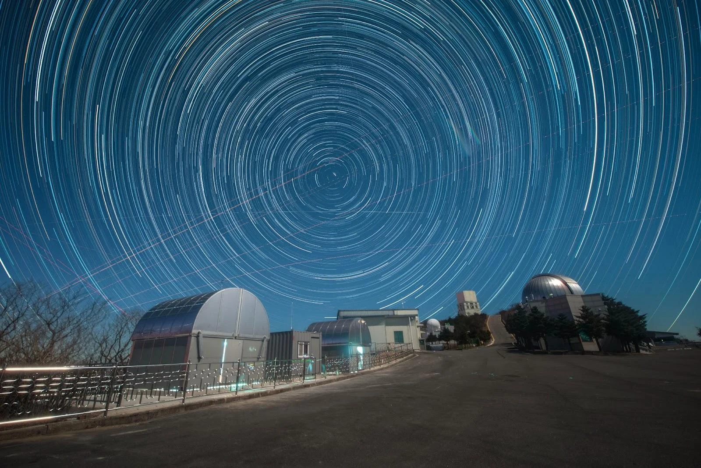
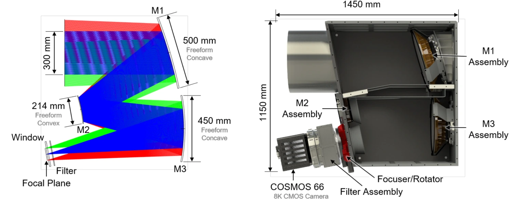
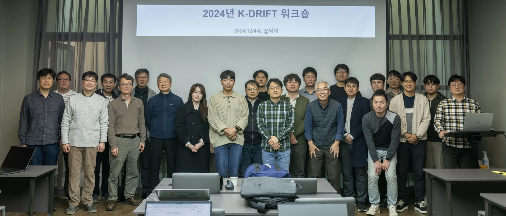

조석 구조와 은하 병합
은하 주변의 조석 구조를 관측하여 은하 간 상호작용과 병합 이력을 분석합니다.

K-DRIFT는 한국천문연구원의 초극미광 광시야 탐사 프로젝트입니다. 은하 주변의 조석 구조와 초확산은하, 은하단내광을 관측하며 은하가 형성되고 진화하는 과정을 연구합니다.
보현산천문대 K-DRIFT 돔 · 별의 일주 운동
사진: 전영범 / K-DRIFT 프로젝트
K-DRIFT G1, 칠레에서 첫 영상 관측 성공
공식 보도자료 ↗K-DRIFT는 밤하늘 배경보다 희미한 천체의 분포와 구조를 조사합니다. 이런 천체를 관측하기 위해 산란광을 줄인 광학계와 넓은 시야에 맞는 관측 전략, 정밀한 배경 보정 방법을 개발합니다.
프로젝트 소개 논문 ↗은하 주변의 조석 구조를 관측하여 은하 간 상호작용과 병합 이력을 분석합니다.
크기에 비해 희미한 초확산은하를 찾아 구조와 주변 환경을 비교합니다.
개별 은하에 속하지 않고 은하단 전체에 퍼져 있는 별빛을 분석해 은하단의 형성과 진화를 연구합니다.
K-DRIFT G1과 패스파인더로 관측한
은하와 주변의 저표면밝기 구조를 소개합니다.
K-DRIFT G1의 Fornax 은하단 시험 관측 영상입니다. 초확산은하, 조석 구조, 은하단내광의 위치를 표시했습니다.
은하 외곽의 저표면밝기 구조를 확인하기 위해 밝기를 반전한 영상입니다. 이런 구조를 정확하게 측정하려면 하늘 배경을 정밀하게 보정해야 합니다.
K-DRIFT G1 관측 영상 · 반전 밝기 표현
패스파인더와 Subaru의 NGC 5907 관측 영상을 비교합니다. 은하 주변의 조석 구조는 과거 상호작용과 병합 이력을 연구하는 데 사용됩니다.
K-DRIFT 프로젝트 · 관측 조건이 다른 비교 영상
K-DRIFT는 비차폐 자유곡면 3반사 광학계를 사용합니다. 중앙 차폐에 의한 회절과 산란광을 줄이면서 넓은 시야를 확보하도록 설계했습니다. 국내 연구진이 광학계를 설계·제작하고 정렬과 성능 평가를 진행했습니다.

세 반사경의 형상과 배치를 최적화해 넓은 시야에서도 영상 품질을 유지합니다. 광학 설계와 자료처리는 산란광 억제와 배경 보정 요구조건에 맞추어 개발합니다.
초극미광 탐사에 맞춘 망원경·관측법 개발 시작
비차폐 자유곡면 3반사 광학계(LAF-TMS) 채택
본원 첫 관측 후 보현산에서 NGC 5907 시험 관측
표면밝기 성능 논문 발표, 부경 교체와 재정렬
원격관측·하늘 밝기 모니터링 구축, 대형 CMOS 시험
보현산 시험 관측 후 칠레 El Sauce 천문대에 설치
Fornax 은하단의 초확산은하·조석 구조·은하단내광 소개
은하·먼지와 가스·이론 모형의 연구 논문 공개
과학임무, 광학·광기계, 관측 운영, 자료처리 분야의 연구진이 참여합니다. 망원경을 개발하고 성능을 평가하며, 관측 자료를 분석해 이론 모형과 비교합니다.
연구책임자 고종완
한국천문연구원

은하 외곽의 별과 가스, 초확산은하, 은하단내광은 은하의 질량 증가와 환경 효과를 연구하는 관측 대상입니다. K-DRIFT는 이들의 분포와 구조를 측정하고 수치모의실험 및 다파장 관측 자료와 비교합니다.
표면밝기는 하늘의 단위 각면적당 밝기입니다. 빛의 총량이 같아도 넓은 면적에 퍼져 있으면 단위 면적당 신호가 낮아 검출이 어렵습니다. 저표면밝기 구조의 측정에서는 망원경의 산란광과 배경 보정 오차가 천체 신호와 혼동될 수 있습니다.
K-DRIFT는 넓은 시야에서 천체와 주변 배경을 동시에 관측합니다. 산란광을 억제하는 광학계와 위치 이동·회전을 결합한 관측법을 사용하여 배경 보정 오차를 줄이고자 합니다. 연구책임자 인터뷰 ↗
항성 스트림, 조석 꼬리, 셸 구조는 은하 간 상호작용과 병합 과정에서 형성됩니다. 이들의 형태와 분포를 측정해 은하의 병합 이력과 외부 은하에서 유입된 항성 성분을 연구합니다.
관측 대상 · 조석 꼬리, 항성 스트림, 항성 헤일로
Byun et al. 2026 ↗초확산은하(ultra-diffuse galaxy, UDG)는 크기에 비해 표면밝기가 낮은 은하입니다. 서로 다른 환경에서 초확산은하를 찾아 크기, 밝기 분포, 조석 구조를 비교합니다. 이를 통해 형성 과정과 주변 환경의 영향을 조사합니다.
관측 대상 · 가까운 우주의 저표면밝기 은하와 UDG
프로젝트 과학 목표 ↗은하단내광(intracluster light, ICL)은 개별 은하에 중력적으로 묶이지 않은 별들이 내는 빛입니다. 밝기 분포와 공간 구조를 분석해 은하가 조석 작용으로 질량을 잃는 과정과 은하단의 형성 이력을 연구합니다. G1의 Fornax 시험 관측 영상에는 은하단내광을 포함한 저표면밝기 구조가 표시되어 있습니다.
관측 대상 · 은하단내광과 중심 은하의 외곽 구조
Fornax 관측 소개 ↗은하 외곽은 가스의 표면밀도가 낮은 조건에서 별 형성을 연구할 수 있는 영역입니다. 저표면밝기 영상과 다파장 탐사자료를 비교하여 별 형성의 공간 분포와 은하 원반의 성장을 조사합니다.
연구 방향 · 저밀도 영역의 별 형성과 다파장 자료 비교
은하 과학 주제 논문 ↗우리은하 성간 먼지의 산란광인 시러스는 외부 은하의 저표면밝기 구조와 겹쳐 나타날 수 있습니다. 시러스와 외부 은하 신호를 구분하고 먼지의 분포와 성질을 조사합니다. Hα 관측을 통한 은하주변매질(circumgalactic medium, CGM)과 가스 꼬리 연구도 제안되어 있습니다.
연구 방향 · 성간 먼지, 은하 헤일로의 먼지, 이온화 가스
Seon et al. 2026 ↗은하 치환 기법(Galaxy Replacement Technique, GRT)은 우주론적 모의실험의 일부 암흑물질 헤일로를 고해상도 은하 모형으로 대체하여 항성 성분의 중력적 진화를 계산합니다. 모의실험에서 생성한 저표면밝기 구조를 관측 자료와 비교하여 조석 상호작용과 은하 병합의 영향을 분석합니다.
연구 방법 · 수치모의실험과 저표면밝기 구조의 연결
Chun et al. 2026 ↗산란광 억제, 관측 전략, 배경 보정은
저표면밝기 측정의 주요 기술 요소입니다.
확산된 천체와 배경 추정에 필요한 주변 하늘을 동시에 관측합니다. G1의 단일 노출 시야는 4.43° × 4.43°입니다.
중앙 차폐가 없는 광학계와 자유곡면 반사경을 사용합니다. 반사경의 가공·정렬 오차와 차광 구조가 영상 품질 및 산란광 수준에 영향을 줍니다.
검출기의 위치별 감도 차이와 하늘 밝기의 변동을 보정합니다. 관측 위치 이동과 카메라 회전을 결합하여 감도 보정의 오차를 줄이는 방법을 연구합니다.
디더링은 노출 사이에 망원경의 지향점을 이동하는 관측 방법입니다. 롤링 디더링은 여기에 카메라 회전을 추가합니다. 같은 천체와 배경을 검출기의 여러 위치와 방향에서 기록하도록 관측 순서를 정합니다.
Byun et al. (2025)은 하늘 배경의 공간적 변동을 포함한 모의관측에서 두 방식을 비교했습니다. 회전을 추가한 방식은 검출기 감도 보정 영상인 dark-sky flat의 오차를 줄이는 것으로 나타났습니다.
관측 전략 논문 ↗입사동공은 빛을 받아들이는 유효 구경을, 주경 크기는 첫 번째 반사경의 크기를 뜻합니다. G1은 비축 광학계를 사용하므로 두 값이 다릅니다.
Ko et al. 2025 · Table 1 및 기기 설명 ↗| 광학 구성 | 비차폐 자유곡면 3반사 |
|---|---|
| 입사동공 / 주경 | 300 mm / 500 mm |
| 초점거리 / 초점비 | 1,050 mm / f/3.5 |
| 단일 노출 시야 | 4.43° × 4.43°약 19.6 deg² |
| 검출기 | COSMOS-66 CMOS8,120 × 8,120 pixels · 약 6,600만 화소 |
| 픽셀 크기 / 각크기 | 10 μm / 1.96″ per pixel |
| 관측 장소 | El Sauce Observatory, Chile |
| 초기 G1 구성 | 동일 설계 망원경 2대 |
표면밝기는 하늘의 단위 각면적당 밝기이며, mag arcsec⁻²로 표시할 때 등급 값이 클수록 어둡습니다. 표면밝기 한계를 비교하려면 파장대, 노출시간, 측정 면적, 검출 기준(1σ·3σ 등)을 명시해야 합니다.
PSF(point spread function, 점퍼짐함수)는 점광원의 빛이 영상에서 퍼지는 분포입니다. FWHM(full width at half maximum, 반치폭)은 최대 밝기의 절반에 해당하는 위치에서 측정한 폭입니다. 초극미광 관측에서는 중심부의 폭과 함께 PSF 외곽부의 산란광도 평가해야 합니다.
천체를 마스킹한 여러 관측 영상의 밤하늘 배경을 결합한 감도 보정 영상입니다. 검출기 위치에 따른 반응 차이를 보정하는 데 사용합니다. 하늘 배경의 공간적 구조가 보정 영상에 남지 않도록 관측 순서와 영상 결합 방법을 설계합니다.
패스파인더의 성능 평가, 관측·보정 방법의 검증, G1의 첫 관측 결과를 정리했습니다. 각 결과에 사용한 기기와 측정 조건도 함께 표시했습니다.
0.3m 패스파인더의 2시간 관측에서 r 대역 표면밝기 한계 약 28.5 mag arcsec⁻²를 보고했습니다. PSF 외곽부의 밝기 분포와 영상에 나타난 내부 반사를 분석했습니다.
측정 조건 · 패스파인더, r 대역, 1σ, 10″ × 10″ 영역, 총 노출 2시간.
Byun et al. 2022 · PASP ↗시험 관측과 광학 모의를 통해 반사경 가공, 지지 구조, 정렬의 오차를 분석했습니다. 부경(M2) 교체와 정렬 개선 후 PSF 반치폭이 3.8 pixel에서 1.8 pixel로 줄었습니다.
패스파인더의 개선 전·후 측정값으로, 해당 검출기의 pixel 단위로 표시했습니다.
Lee et al. 2025 · JATIS ↗서로 다른 하늘 배경 조건을 적용한 모의관측에서 위치 이동만 사용한 방식과 회전을 추가한 방식을 비교했습니다. 롤링 디더링이 dark-sky flat의 오차를 줄일 수 있음을 제시했습니다.
Byun et al. 2025 · PASP ↗칠레에 설치한 G1의 첫 공개 영상입니다. Fornax 은하단의 초확산은하, 조석 구조, 은하단내광을 관측한 결과를 2026년 1월 보도자료에서 소개했습니다.
우주항공청·KASI 보도자료 ↗G1의 남반구 초극미광 영상 탐사와 후속 우주망원경 개발 구상을 정리했습니다. 공개된 프로젝트 논문과 인터뷰에서 제시한 계획입니다.
개발 계획 인터뷰 ↗프로젝트 소개 논문은 r 대역 약 29–30 mag arcsec⁻²의 표면밝기 한계를 목표로 제시했습니다. 가까운 은하, 초확산은하, 은하단의 초기 과학 관측 이후 탐사 범위를 확대할 계획입니다.
설계 목표 · r 대역, 3σ, 10″ × 10″ 기준의 계산값이며 G1의 실측 한계는 아닙니다.Ko et al. 2025 · 탐사 계획 ↗저표면밝기 영상, 다파장 탐사자료, 수치모의실험을 비교하여 은하의 항성 성분과 주변 먼지·가스의 분포를 분석하고 환경 효과를 조사할 계획입니다.
지상에서 개발한 비차폐 자유곡면 광학 기술을 활용하여 우주망원경 원형 모델을 개발하는 구상입니다. 준궤도 및 우주 관측을 위해 단계적인 기술 검증과 후속 사업 기획이 필요합니다.
공개된 인터뷰에 제시된 장기 개발 구상입니다.프로젝트 개요와 기기 성능, 과학 연구 주제를 다룬
논문과 강연 영상, 보도자료를 모았습니다.
논문 7편
K-DRIFT의 과학 목표, G1 설계, 관측 전략과 탐사 계획을 설명합니다.
자유곡면 반사경의 오차와 정렬 개선 효과를 분석하고 시험 관측으로 영상 품질을 평가합니다. SPIE 소개글에서 인용한 논문입니다.
하늘 배경의 변동이 감도 보정에 미치는 영향을 모의관측으로 분석하고 롤링 디더링의 효과를 평가합니다.
NGC 5907 관측을 통해 패스파인더의 표면밝기 한계와 저표면밝기 구조 검출 성능을 평가합니다.
가까운 은하의 저표면밝기 구조와 별 형성, 다른 탐사자료와의 비교를 포함한 과학 연구 주제를 제시합니다.
우리은하 시러스와 외부 은하 신호의 구분, 은하 주변 먼지와 Hα 방출 가스의 연구 가능성을 다룹니다.
은하 치환 기법으로 항성 성분의 중력적 진화를 계산하고 저표면밝기 관측과 비교하는 방법을 제시합니다.
K-DRIFT 관련 보도와 과학 강연
G1의 첫 관측과 초극미광 탐사 프로젝트에 관한 보도입니다.
YouTube에서 보기 ↗은하 주변의 저표면밝기 구조와 K-DRIFT의 연구 목표를 설명하는 강연입니다.
YouTube에서 보기 ↗수치모의실험과 관측 결과의 비교를 다룬 강연의 발췌 영상입니다.
YouTube에서 보기 ↗은하단내광을 다루는 사이언스포럼 강연입니다. 핫클립의 전체 강연 영상입니다.
YouTube에서 보기 ↗